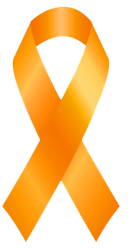
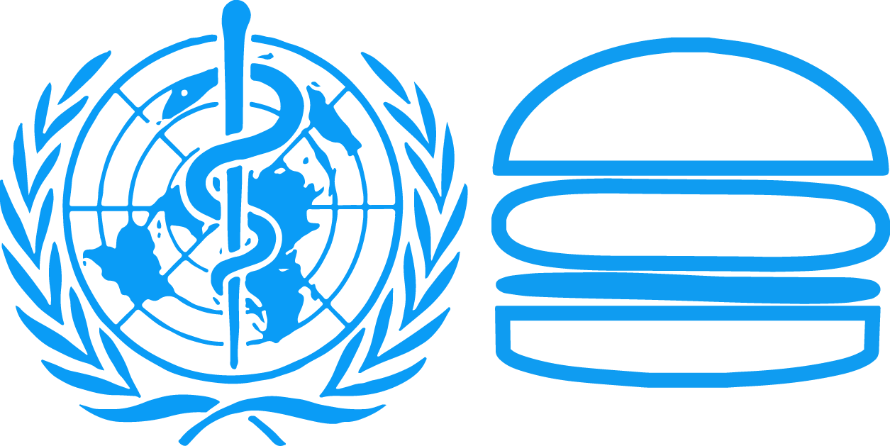
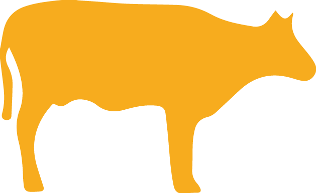
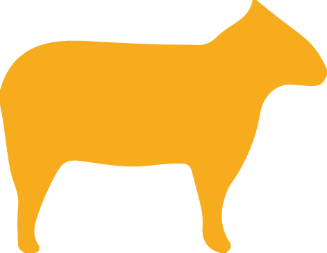
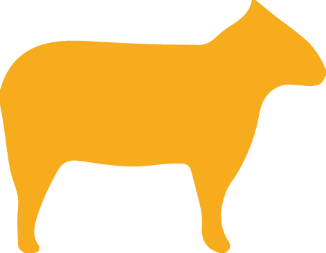
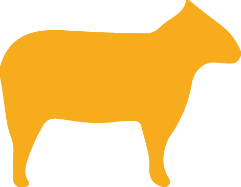

Meet PolyBiome, an initiative to reduce the carcinogenic potential of meat using safe microorganisms in our body.
One in every 33 cancers is ascribed to processed or red meat.
In an unprecedented statement, the World Health Organization announced in October 2015 their concern in reference to recent studies by the International Agency for Research on Cancer (IARC) which related processed and red meat intake with colorectal cancer.

The studies found that 21% of bowel cancers are caused by processed or red meat, which accounts for a 3% of the total world cancers. In the Carcinogenic Groups classification processed meat rank now in the first risk group and red meat in the second.
 

